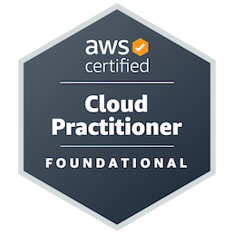
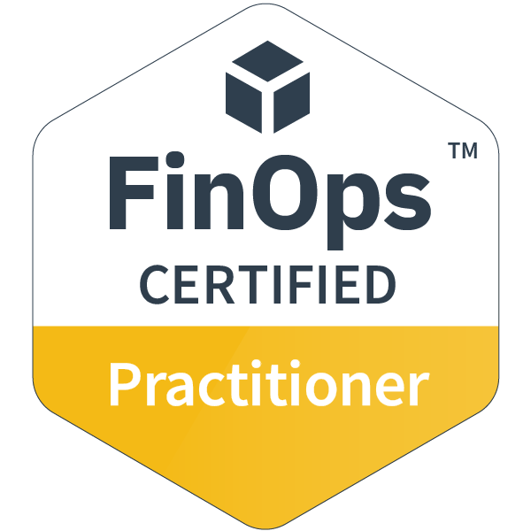

Chad is an experienced FinOps and Technical Support leader with experience spanning cloud cost/operations and customer-facing engineering. Since 2025, he has served as Manager of Technical Support, FinOps (CloudCheckr, Flexera One Cloud Cost Optimization (CCO), and Data Cloud Optimization (DCO)) at Flexera, supporting initiatives including migration from Zendesk to Salesforce, implementation of live chat, and planning, migration, and coordination for CloudCheckr upgrades to CCO.
From 2022 to 2025, he was Manager of Technical Support, FinOps (CloudCheckr, Spot Billing Engine/Cost Intelligence, and Spot Security) at NetApp, where he coordinated and implemented Simplesat for end-to-end CSAT measurement and reporting and led coordination of the migration from Atlassian Service Desk to Zendesk.
Before the acquisitions, he worked at CloudCheckr across successive technical roles: Tier 2 Support Engineer (2019–2021), Quality Assurance Engineer (2017–2019), and Technical Support Engineer (2016–2017). Prior to CloudCheckr, he held several different roles at Sutherland Global (2009–2016).
Chad holds a Bachelor of Science in Cybersecurity from the State University of New York at Canton.

